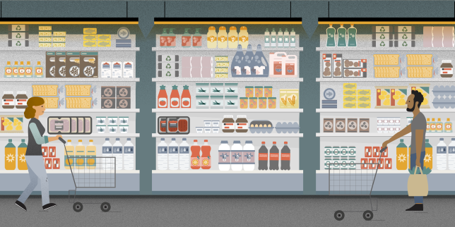

A la une
Guerre en Ukraine en direct : après le sabotage présumé des infrastructures de Nord Stream, la Finlande et la Suède prennent des mesures de sécurité
En Suède, les deux principales centrales nucléaires du pays, situées à Forsmark (centre-est) et Ringhals (sud-ouest) ont fait savoir qu’elles étaient passées en « vigilance accrue » du fait des évènements en mer Baltique.
29/09/2022

Luc Rémont, venu de Schneider Electric, proposé par l’Elysée pour être le nouveau patron d’EDF
Il cumule pratique des cabinets ministériels, expérience financière et compétences industrielles.
29/09/2022

Huile de tournesol, coquillettes ou papier toilette… Visualisez les hausses de prix d’un chariot de courses
Ce panier IRI, réalisé pour « Le Monde », est composé d’une quarantaine de produits représentatifs de la consommation, dont les prix ont augmenté notamment à cause de l’inflation.
29/09/2022
Face à la flambée des prix de l’énergie, Berlin débloque 200 milliards d’euros
En septembre, l’inflation en Allemagne a bondi à 10 % sur un an, la valeur la plus élevée enregistrée depuis 1951.
29/09/2022
Emmanuel Macron omniprésent dans les débats sur l’éducation, au risque de braquer la communauté enseignante
Salaire des enseignants, concertation sur la refondation de l’école, lycée professionnel… Le président Macron multiplie les prises de parole sur les sujets éducatifs en cette rentrée.
29/09/2022
Paul Veyne : « La question des origines chrétiennes de la France est un faux débat »
Pour l’historien Paul Veyne, qui s’est éteint jeudi 29 septembre 2022, la religion n’est qu’un des éléments d’une civilisation, et non sa matrice, comme il l’expliquait en 2016 dans un entretien au « Monde des religions ».
29/09/2022
En continu
Burkina Faso : à Djibo, une vie sous blocus djihadiste
La ville du nord du pays est assiégée depuis sept mois par des groupes armés. Un convoi de ravitaillement sous escorte, le premier depuis juillet, a été attaqué.
29/09/2022
Face à la flambée des prix de l’énergie, Berlin débloque 200 milliards d’euros
En septembre, l’inflation en Allemagne a bondi à 10 % sur un an, la valeur la plus élevée enregistrée depuis 1951.
29/09/2022
Guerre en Ukraine en direct : après le sabotage présumé des infrastructures de Nord Stream, la Finlande et la Suède prennent des mesures de sécurité
En Suède, les deux principales centrales nucléaires du pays, situées à Forsmark (centre-est) et Ringhals (sud-ouest) ont fait savoir qu’elles étaient passées en « vigilance accrue » du fait des évènements en mer Baltique.
29/09/2022
Emmanuel Macron propose de nommer Luc Rémont nouveau patron d’EDF
L’Elysée a annoncé sa nomination dans un communiqué, jeudi 29 septembre.
29/09/2022
Le nombre de naissances en France est reparti à la hausse en 2021, après six années de baisse
Les deux périodes de confinement ont été suivies par une accélération du nombre de conceptions, relève l’Insee. Résultat : le nombre de naissances a rebondi en mars et avril 2021, de même qu’à partir d’août 2021.
29/09/2022
En Bulgarie, les prorusses donnent le ton de la campagne électorale
Faute de gouvernement stable, le pays retourne aux urnes le 2 octobre. L’éventuel retour du gaz russe est devenu le principal sujet des législatives, les quatrièmes en dix-huit mois.
29/09/2022
Les plus lus
Guerre en Ukraine en direct : après les fuites sur les gazoducs Nord Stream, la Russie ouvre une enquête pour « acte de terrorisme international » et la Finlande soupçonne « un acteur gouvernemental »
Une réunion du Conseil de sécurité de l’ONU aura lieu vendredi. La Russie a accusé les Etats-Unis, qui ont jugé l’insinuation « ridicule ». Plus de la moitié du gaz contenu dans les deux gazoducs a déjà fui, selon le Danemark.
28/09/2022

Fuites sur les gazoducs Nord Stream 1 et 2 : le risque d’une « bombe climatique »
La fuite dans l’atmosphère de centaines de milliers de tonnes de méthane, un gaz à effet de serre au potentiel de réchauffement bien supérieur au CO₂, fait craindre à plusieurs experts un « désastre environnemental ».
28/09/2022
Guerre en Ukraine en direct : après le sabotage présumé des infrastructures de Nord Stream, la Finlande et la Suède prennent des mesures de sécurité
En Suède, les deux principales centrales nucléaires du pays, situées à Forsmark (centre-est) et Ringhals (sud-ouest) ont fait savoir qu’elles étaient passées en « vigilance accrue » du fait des évènements en mer Baltique.
29/09/2022
Coolio, le rappeur qui s’est fait connaître du grand public avec « Gangsta’s Paradise », est mort
L’artiste de 59 ans, Artis Leon Ivey Jr., de son vrai nom, a été découvert inconscient chez un ami à Los Angeles. En plus de ce titre phare, il avait également enregistré « Fantastic Voyage » au cours d’une longue et riche carrière.
29/09/2022
Nord Stream : une quatrième fuite de gaz détectée au large de la Suède dans la mer Baltique
Selon les autorités suédoises, il y a désormais « deux fuites côté suédois et deux fuites côté danois ». L’hypothèse de défaillances accidentelles simultanées semble écartée et celle d’un « acte délibéré » privilégiée.
28/09/2022
Pourquoi l’économie du Royaume-Uni est saisie d’un vent de panique
La Banque d’Angleterre est intervenue en urgence mercredi. L’envolée du prix de la dette britannique et la chute de la livre ont été enrayés, pour l’instant. Des secousses symptomatiques d’un risque de crise financière mondiale.
28/09/2022